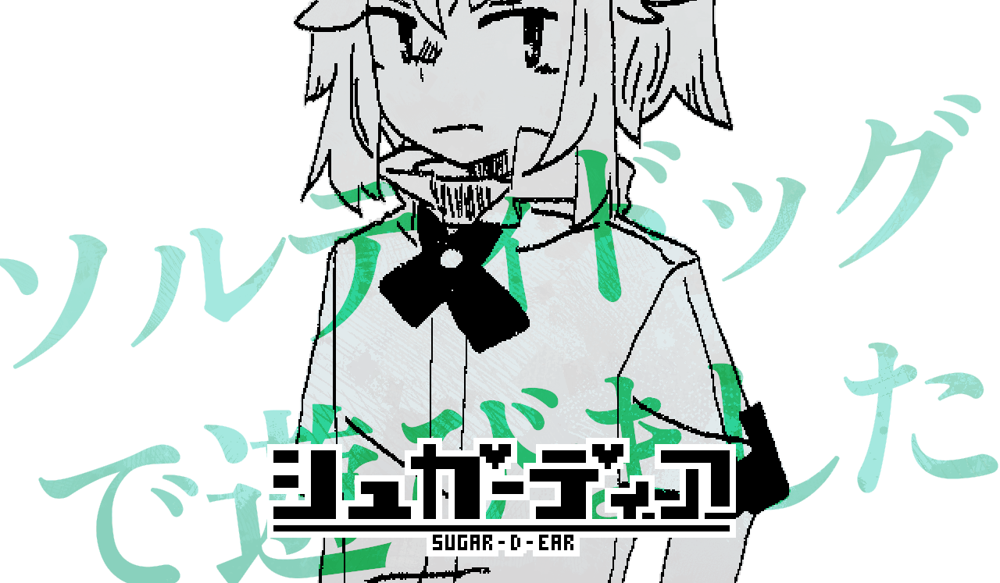

「……別に。何も変わらん。今まで通りだ」
ソルティドッグはそっぽを向きながら答えました。
「相変わらずキャットはそそっかしいし、バニーははっきりしないし、マウスはとろくさい。何も変わりない」
それから少しだけためらって、もう一人分言葉をつぎ足します。
「……あのひとだって。変わらない」
「今日も元気に『スライムの形質を持ったドラゴンをつくるぞ！！』とか言って、変なものを作ってる」
ソルティドッグは少しだけうつむいて、白衣のポケットに手を突っ込みました。
そうして取り出したこぶしを開くと、古びたバッジとドッグタグが乗っています。
「軍人の……アドル・セイフは、『Dr.シュガード』に手向ける。戒めも、もういい」
これ、あんたが処分してくれないか。
ごみに捨てると誰か気付いて戻しにくる可能性があるし、かといって不法投棄するのもはばかられるから。
ソルティドッグはちょっとだけばつが悪そうに言いました。
「得難い機会なのは変わらない」
「でもそれは誰にとっても同じで……、二度目も何も、俺が俺なのはこの一度きりでいいんだ」
軍人だった過去を手放したソルティドッグは、でも、と言葉を続けます。
「恩の反対側に、業があったんだろうって今ではわかってる」
「あのひとに、同じように思ってほしいとも思わない」
俺のそれは、実際の死を挟んでなくても。全く同一じゃないと痛感してても。
俺だけは、理解を示さなければならない。
「……あんたも別に暇なわけじゃないだろう。来るのは構わんが、ほどほどにしてくれ」
眉のあたりに苛立ちと似た感情を装って、ソルティドッグはため息とともに言うのでした。
「……別に。何も変わらん」
ソルティドッグはそっぽを向きながら答えました。
「あの事件の前と同じだ。何も変わらない、……何一つ」
何かを悔んでいるように、ソルティドッグは口の中で唸るように一言ひとことを発します。
ソルティドッグは少しだけうつむいて、白衣のポケットに手を突っ込みました。
そうして取り出したこぶしを開くと、古びたバッジとドッグタグが乗っています。
「軍人の……アドル・セイフは、『Dr.シュガード』に手向ける」
これ、あんたが処分してくれないか。
ドクターを連れてったのはあんただから。ドクターと一緒に葬ってほしい。
ソルティドッグはちょっとだけばつが悪そうに言いました。
「壊れていた。もう死ぬところだった。俺は助けてもらって感謝したけど、でも」
「ドクターにもそう思えとは言えない」
軍人だった過去を手放したソルティドッグは、泣き声が混じらないようにと言葉を選んでいるようでした。
「恩の反対側に、業があったんだろうって今では思う」
「当たり前だ、俺もドクターも、別の人間なんだから」
俺のそれは、実際の死を挟んでなくても。全く同一じゃないと痛感してても。
俺だけは、理解を示さなければならない。
「……あんたも別に暇なわけじゃないだろう。俺たちも、うずくまっているばかりのガキじゃない」
ソルティドッグは言外に、もう来なくていいと。
そう言って、小さく笑って見せるのでした。